We are grateful for Murray Stewart (MRC LMB, Cambridge) for this example.
This tutorial also requires Coot, which is not distributed with Phenix; see here for details on obtaining Coot and using it with the Phenix GUI.
This tutorial is intended for users who are completely unfamiliar with macromolecular crystallography and/or Phenix. It outlines the procedure for solving a structure by molecular replacement, performing initial refinement, and rebuilding the structure in Coot. Because the structure involved (Ran-GDP R76E mutant) is relatively small and moderate resolution, it can be significantly improved in a reasonable amount of time without much difficulty. You should first read the documentation for the Phenix GUI before running this tutorial. We also recommend reading the molecular replacement overview and the documentation for the Xtriage and phenix.refine GUIs.
As with other Phenix tutorial datasets, you can automatically set up a project with the necessary files from the GUI; the example will be listed in the "Molecular replacement" category of the example menu.
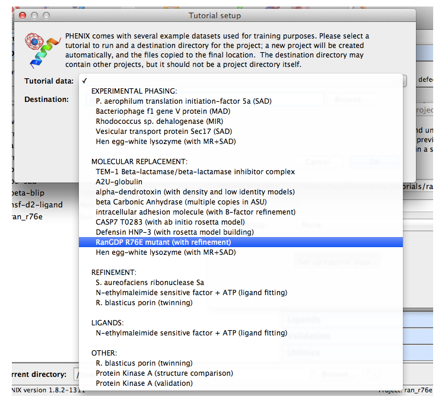
There will be three input files for this project: the experimental data and R-free flags (MTZ format), the wild-type RanGDP used as a search model for MR (PDB format), and the sequence (FASTA format).
This step is not strictly necessary to solve the structure, but is strongly recommended for any dataset that you are unfamiliar with, especially if you are unsure whether and/or how the structure can be solved. Launch Xtriage by clicking the icon under "Reflection tools" in the main GUI. Only the MTZ and FASTA files are used as input for this example (the "Reference PDB file" option only applies for models which have already been placed correctly and refined agains the data).
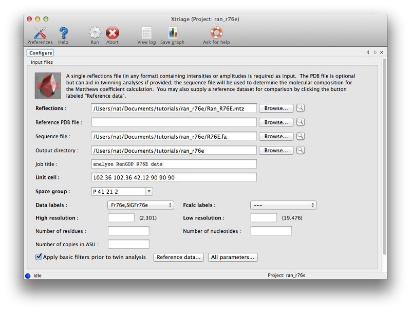
Once you have entered the files, click the Run button to start Xtriage. The program should finish in a few seconds. Take some time to look through the result tabs and familiarize yourself with the statistics reported here. Since this is high-quality data, there is nothing that requires special handling. (We usually recommend using the original intensities - ideally unmerged - for Xtriage, but since only amplitudes are available for this dataset those can be used instead.) Note that based on the sequence, Xtriage has (correctly) suggested that only one copy is present in the asymmetric unit (ASU) of the crystal.
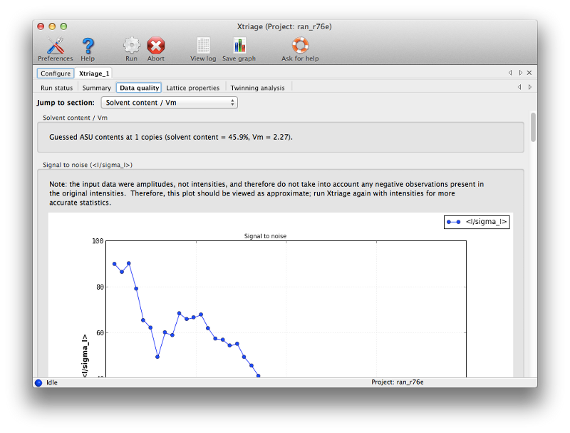
To solve the structure we will use the simple Phaser-MR GUI, which should be the first program in the "Molecular replacement" category. This interface is suitable for structures where we only need to use a single search model. All three files (MTZ, PDB, and FASTA) should be used as input. (The sequence is optional; we could instead enter the expected molecular weight or let Phaser guess based on the ensemble, but it is safer and simpler to supply detailed information.)
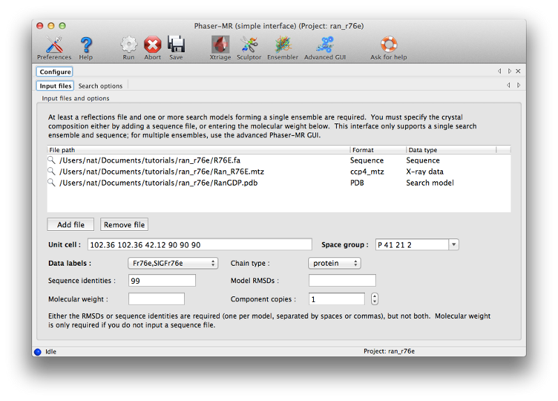
Note that any time you have a field for a file name, there will be a magnifying glass icon on the same line (in GUIs like Xtriage this will be a separate button). Click this icon to see basic information about the contents of the file (or for text files, open in an editor). The panel for the PDB file will look like this:
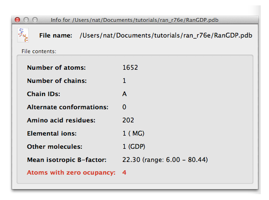
For a reflection file, each array of data will have a separate panel, and you can select which array to view using the drop-down menu:
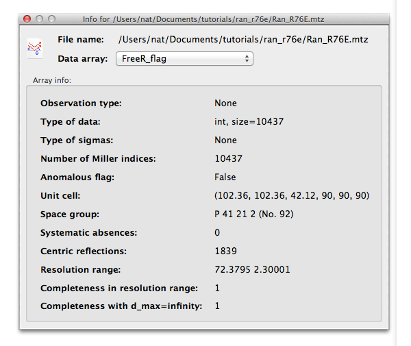
Right-clicking on the magnifying glass will open a menu with additional options; later in the tutorial you will edit a PDB file this way.
In the "Sequence identity" field, enter "99" (the search model differs in sequence by only a single residue, although some local conformational differences exist.) All other settings can be left on default for this run. Again, click "Run" to start Phaser; this should take several minutes. You can watch the status window to see how molecular replacement is proceeding; we recommend familiarizing yourself with the log output.
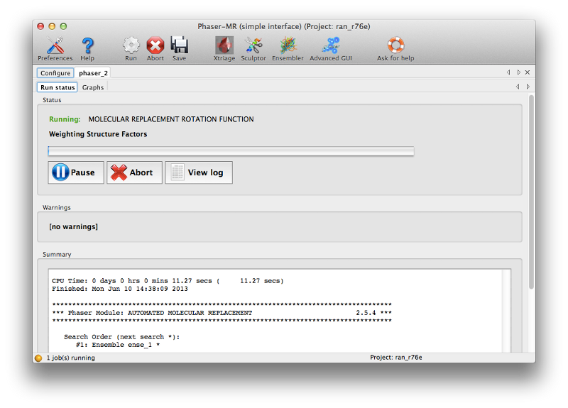
Phaser will open a new tab displaying the results when the job is finished. There are several obvious clues that model placement and phasing was successful:
- The LLG (log-likelihood gain) is high and positive. This is essentially a measure of the probability of the solution. (Negative scores almost always mean that MR was not successful.)
- The TFZ (translation function Z-score) is well above 8 (the threshold above which the large majority of solutions are correct). This indicates the signal-to-noise ratio of the solution.
- Although not displayed in this tab, the R-factor after refinement is well below the threshold for a random agreement between F-obs and F-calc. You can find this in the log output on the status tab if you scroll up (look for "RVAL" in the section labeled "Refinement table"). Note that a higher-than-random R-factor cannot be taken as an indicator that MR failed, since correct solutions will very often have this property (but immediately improve upon running full refinement).
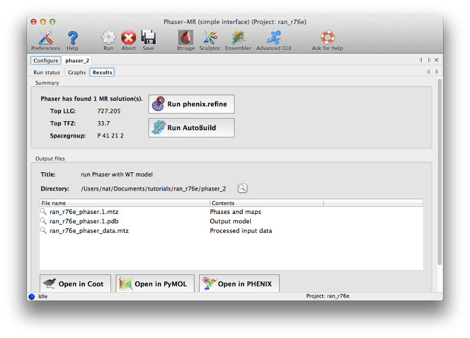
At this time you can click "Open in Coot" to view the model and maps calculated by Phaser. However, the map quality will be poor at this stage, so it is not worth making any changes to the model until after refinement.
You can launch phenix.refine directly from Phaser by clicking the button labeled "Run phenix.refine". This will load the output model and the MTZ file; you should also input the sequence (this is not actually used in refinement, but the post-refinement validation will check for sequence errors in the model).
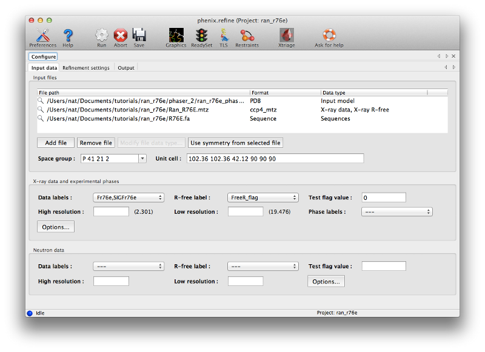
The appropriate column labels and symmetry information should be loaded for you automatically. You should look at the options on the "Refinement settings" tab to get an idea of what is possible in phenix.refine; however, for this structure the default settings will be fine.
Once refinement is started, a new tab will be added with two sub-tabs for log output and overall status. You should familiarize yourself with the log output, especially as it provides some insight into how refinement is performed in Phenix, but for routine use the graphical view is sufficient.
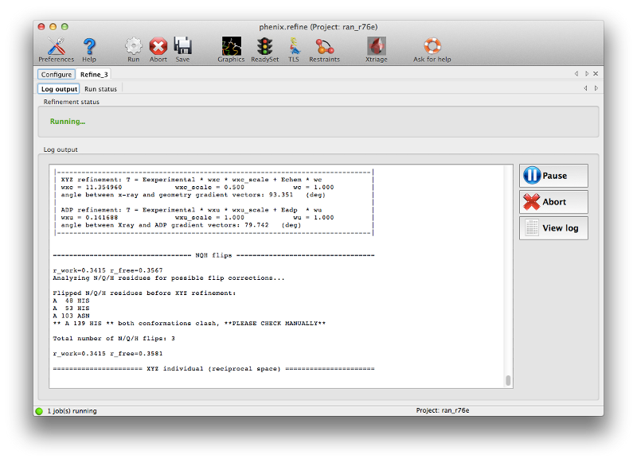
If you are running Phenix with default settings and have Coot installed, the GUI will start Coot with the current model and maps continuously updated. (You can disable this in the Refinement settings of the preferences.) The R-factors should start to improve immediately upon refinement; both R-work and R-free will drop significantly. (Note that R-free is initially lower than R-work because the structure was not previously refined against this dataset; this is quite common for structures solved by MR.) The geometry should also improve slightly. By the third cycle there is less improvement being made and the R-free will converge near 0.30; the structure could probably benefit from a couple more cycles but it is clear that manual intervention will be needed, and the maps should be much better now.
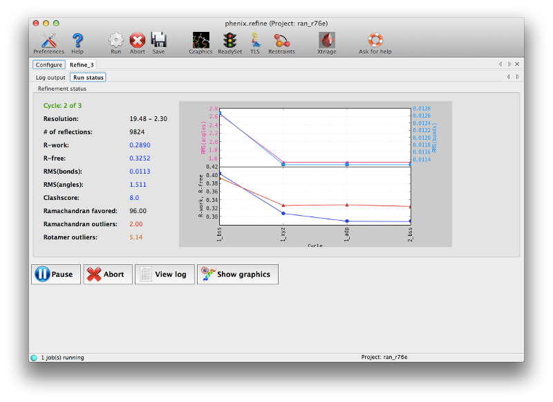
(Note that depending on the operating system and version of Phenix you are using, the statistics you obtain may not exactly match those shown here; this is normal and not cause for concern unless the differences are large.)
After refinement several more tabs will appear displaying a summary of the results plus a number of validation metrics. A list of output files is shown on the first of these tabs, along with buttons to start Coot or PyMOL. You should now click the Coot button to view the final refined model and maps.
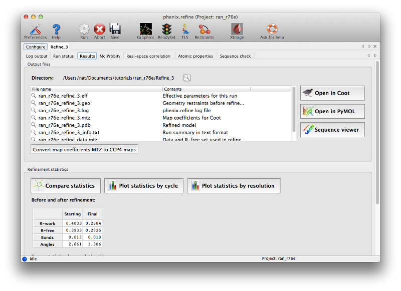
For novice crystallographers, it is worth looking through the structure residue-by-residue, but most of the structure will already be correctly built. The validation pages give us some indication which regions are most problematic, both in terms of geometry and properties of the atoms and maps. In particular, the real-space correlation page lists a number of residues with a poor correlation coefficient (CC) to the electron density:
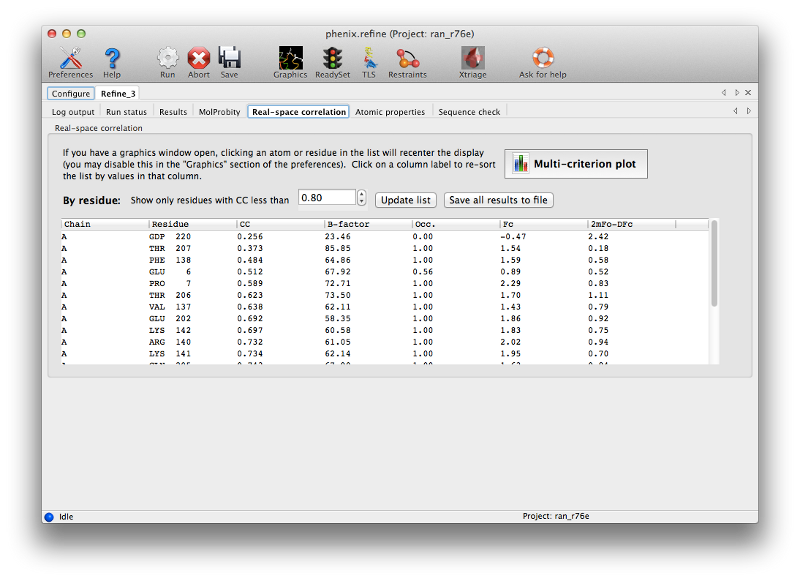
In general a CC below 0.8 is worrisome; unlike other uses of this metric, even the worst-fit residues will never have a negative correlation. In this model the suspicious residues are clustered in several key regions, which can be visualized with the multi-criterion plot (which also displays geometry outliers):
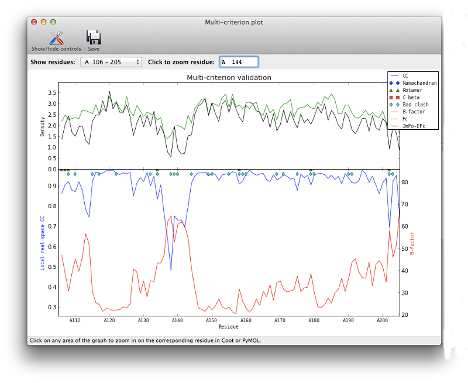
Clicking on any part of this chart, or any item in the list, will recenter Coot on the indicated residue. For now we will focus on the loop from Val 137 through Arg 140, which has obviously undergone a conformational change:
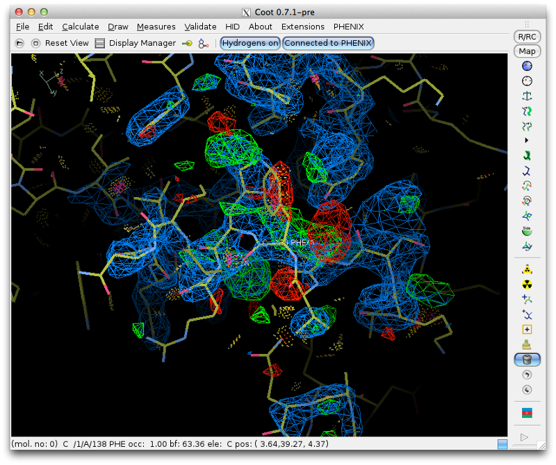
Although we could attempt to drag the residues into the correct location, it is often easier (and more instructive!) to simply delete them and rebuild from scratch. This has the added advantage that we can calculate a new omit map, which should be clearer with the incorrect residues removed. Delete the four residues, and save the edited model. Return to Phenix, and under the "Maps" category of the main GUI, click "Calculate maps". Load the MTZ file and the edited model from Coot. You should specify a file prefix that clearly indicates the purpose of the maps. All other options can be left alone, since we only need the default map coefficients.
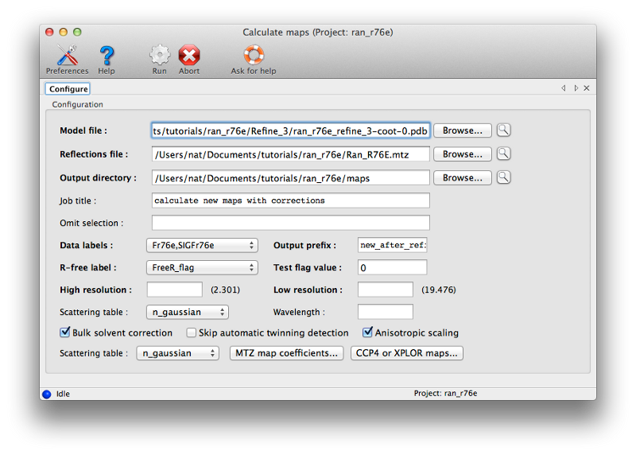
Calculating the maps should only take a few seconds; when complete, a new tab will appear with a button to load the results in Coot (along with the model used for phasing). You should first delete the currently loaded objects from Coot, since these are now redundant. (Alternately, you can close Coot entirely after saving the edited model, since it will be restarted by Phenix if necessary.) The density for the deleted loop should be much clearer now. To rebuild, follow this general outline:
- Click the "Add residue" button on the toolbar (it can be found below the mutate buttons; the icon is an alanine residue with a plus sign), then click the C-terminal residue that you want to add to (in this case, Ile 136).
- Coot will place a new Ala residue; the initial location may be incorrect, but you can use the "Rotate/Translate Zone/Chain/Molecule" button to drag it into approximately the correct position. You can then use the "Mutate and AutoFit" button to change it to the correct residue type (in this case Val; the rest of the loop is FHR).
- Very important: every time you add a residue, you should run the "Real space refine zone" function, selecting approximately four residues adjacent to the target. This will correct any geometry errors, and usually improve the fit to the map as well. If you do not run this but instead continue adding residues, distortions in the model will make it more difficult to place and refine each successive residue. The geometry does not need to be ideal at this point, since you will always run another round of full refinement after rebuilding, but it should not show any obvious errors.
Once you are finished the model should look approximately like this:
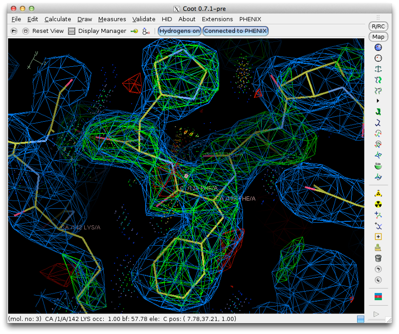
There are a few other problems with the model, but we will skip some of these to save time. First, however, the mutation of interest in this structure needs to be made; in Phenix, if you included the sequence file the validation output will include a sequence check which flags Arg76 as a mismatch. This can be corrected with Coot's "Mutate and AutoFit" function.
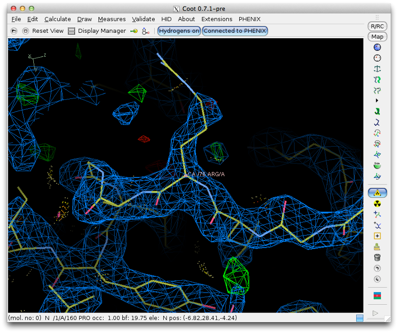
At this point you should again save the current model and return to Phenix.
Open phenix.refine again and load the original MTZ and FASTA files, and the latest PDB file from Coot. One other problem that we did not fix yet is that the occupancy of the GDP and magnesium atoms have been reset to zero by Phaser (this will be flagged in the "Atomic properties" section of the previous validation results). Phenix provides a simple editor for manipulating the contents of PDB files; right-click on the magnifying glass next to the PDB file in the phenix.refine input file list, and select "Edit structure".
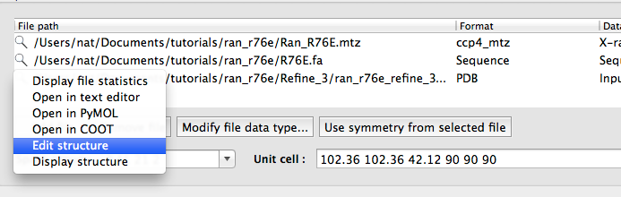
In the editor, click the arrow buttons to open the tree view, and select the magnesium and GDP atom groups (hold down the Shift key to select more than one). Clicking the "Edit" button on the toolbar, or right-clicking the selected atoms, will open a menu with an option to set the occupancy. Select this and enter an occupancy of 1 in the window that appears, then click "Okay". Save the model and exit the editor; the modified PDB file should now have replaced the model from Coot.
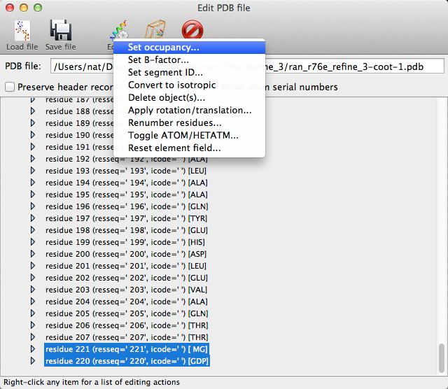
We can still use the default refinement settings, but this time it will also be helpful to place solvent atoms, so you should check the "Update waters" button. The R-factors at the start of refinement should already be significantly lower due to the corrected occupancies and rebuilt residues, but refinement will again drop them several more percent.
It is worth trying to complete the structure and correct all of the remaining errors, but if you have followed all of these steps correctly the R-free may already be comparable to the originally published structure.
Phenix tracks a variety of information about each job run through the GUI, which can be accessed through the job history panel in the main window. If you have completed step 4 it should look something like this:
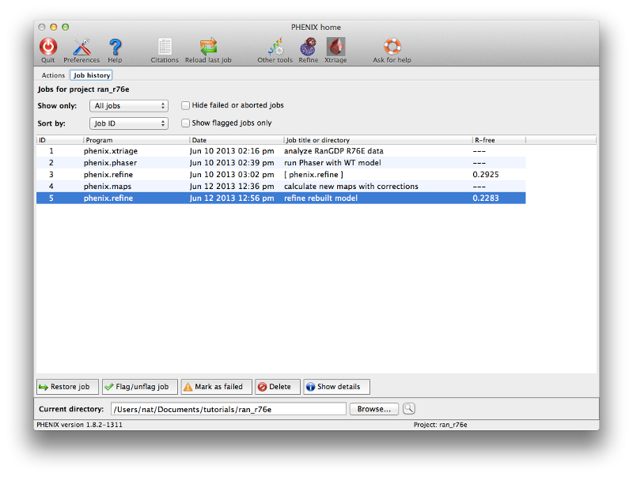
Select a job and click the button labeled "Show details" to view statistics and input and output files for the job. You may also input additional notes if you wish. The job history interface also allows you to flag a job as a failure or delete it entirely (including the output directory, if any). Double-clicking a job (or clicking the restore button in either the list view or the job info panel) will reload the results and configuration.
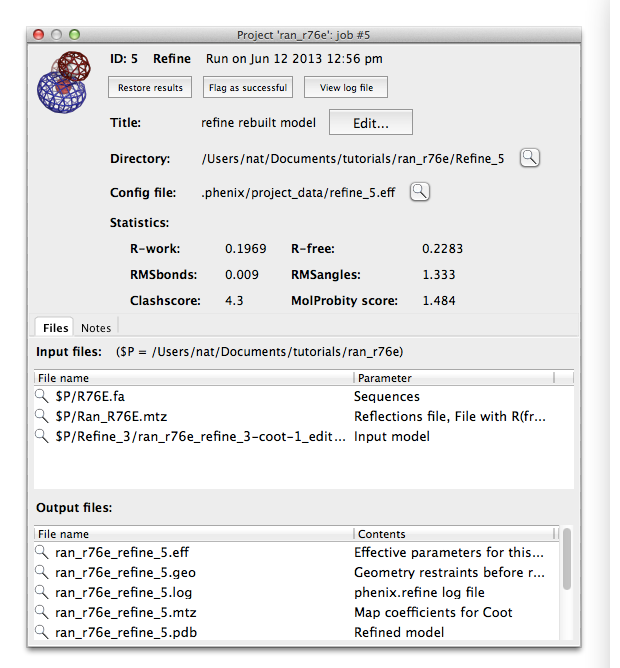
There are several other ways you can use this dataset to learn about Phenix:
- Advanced Phaser: you can use the full Phaser-MR GUI instead of the simple one; this is the GUI you would need if the structure contained multiple different components and/or you needed more control over how the search is performed. (Time: several minutes)
- Ligand fitting: instead of resetting the occupancy for GDP and MG, you could instead delete these residues and run LigandFit to place GDP in the difference map. (Time: approx. 10 minutes, less if multiple processors are available.)
- AutoBuild: you can let Phenix rebuild the structure for you in AutoBuild. Try setting the "rebuild in place" both ways; True or Auto will move the existing atoms without adding or removing any, False will build an entirely new model. (Time: several hours, depending on number of processors.)
- Advanced refinement: try experimenting with the settings in phenix.refine to get a feel for how these affect refinement. Simulated annealing may be particularly interesting. (Time: several minutes to ~1 hour, depending on options and number of processors.) If you continue rebuilding the structure after the second refinement, you should use a more conservative strategy, plus hydrogen atoms and TLS.
Kent, H.M., Moore, M.S., Quimby, B.B., Baker, A.M., McCoy, A.J., Murphy, G.A., Corbett, A.H., Stewart, M. Engineered mutants in the switch II loop of Ran define the contribution made by key residues to the interaction with nuclear transport factor 2 (NTF2) and the role of this interaction in nuclear protein import. J Mol Biol. 1999 289:565-77.